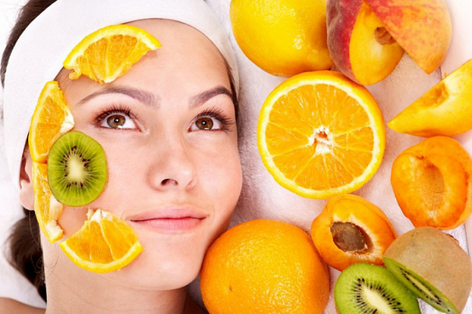

Products for radiance and skin health
At all times, both men and women wanted to preserve their beauty and prolong youth. Cleopatra relied on milk baths, Hippocrates – on clay, our ancestors - on a bath. But you and I know that all the knowledge accumulated on this topic comes down to one thing: the basis of beauty is a healthy body, and the condition of hair, skin and nails is its "litmus test".
Women constantly share "beauty secrets" with each other; howeve a proper and balanced diet is the key to healthy and clean skin. It is no coincidence that people notice that if they, for example, overeat sweets, pimples appear on the face, and fast food "gives" a reaction in the form of redness and itching. As for any rigid diet, its consequences can manifest themselves in the form of dryness and dullness of the skin with signs of irritation or peeling.
In order for all the necessary substances to be in our body, a balanced diet is necessary, including for improving the skin of the face and body. This means that you need to consume a certain amount of proteins, fats, carbohydrates, vitamins and trace elements every day.
Let's try to fix the situation with the help of a properly selected menu.
Due to the cold wind and too dry air in the apartments, the skin begins to peel off, and due to the temperature difference on the street and indoors, vascular asterisks may appear on the face. What can help?
Fatty fish varieties contain essential omega-3 fatty acids, which help to preserve the lipid layer on the skin and retain moisture.
However, keep in mind that when heated, fatty acids are destroyed, so in order to help the skin cope with the cold, only herring, sushi and other dishes in which the fish has not been subjected to heat treatment are suitable.
The study showed that fish can also fight skin peeling, itching and scratches on the face.
This substance seals the walls of capillaries and prevents the appearance of vascular asterisks.
Olive oil softens dry skin, saturates it with vitamins, especially a lot of vitamin E in this oil.
This prevents the skin from fading, and wrinkles are reduced.
Green tea.
It evens out the complexion, fights inflammation and regulates the production of sebum. Due to this effect, the skin becomes clean, healthy and radiant. Green tea extract is an excellent moisturizer.
Shea butter.
It moisturizes the skin, gives it a healthy look, makes it soft and silky, removes redness and flaking.
Oatmeal.
It can soak up the excess oil on your skin and help treat acne. Its antioxidant and anti-inflammatory properties help to treat dry skin and remove dead skin cells.
| Vitamin | Function | Sources |
|---|---|---|
| A | It helps to normalize skin renewal (the norm, by the way, is a 28-day cycle, in adults after 25 years it begins to slow down along with the processes in the cells), and also stimulates the work of fibroblasts - cells associated with the production of collagen and elastin. Not everyone associates the basic properties of vitamin A with its benefits also for hair. | Eggs, milk, yogurt, fish oil, liver |
| C | In skin and hair care, this vitamin (aka ascorbic acid) is valued as an antioxidant, which, by preventing oxidative stress, protects against aging. There are other advantages: vitamin C is needed for the production of collagen, and it also helps in the absorption of iron, which is needed, for example, for hair growth. | Citrus fruits, kiwi, black currant, onion, tomatoes, red pepper. |
| D | The skin is important for its antioxidant abilities; the same vitamin helps it to remain elastic and generally maintain quality, as it supports its barrier functions, protects cell membranes. | Sunlight, dairy products, egg yolk, caviar, fish oil, parsley, mushrooms. |
When dirt and dead particles remain on the skin, they CLOG THE PORES. This can first lead to the appearance of pimples, and in the future - to a non-uniform skin color (pimples pass, and dark spots remain in their place). All that is needed in such a situation are products that resist inflammation and promote skin renewal.
Heating and air conditioners deprive the skin of the necessary moisture, making it dull, dry and lifeless. Simple rules of nutrition will help to put your face in order in months a few weeks.